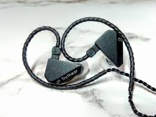

Desain yang Ergonomis dan Minimalis
Truth Ear Hexa datang dengan desain yang sederhana tetapi berkelas. Dengan housing yang ergonomis dan ringan, IEM ini cocok dengan sempurna di telinga tanpa menimbulkan kelelahan bahkan setelah penggunaan yang panjang. Desain yang minimalis juga memastikan bahwa fokus tetap pada kualitas audio yang disampaikan.
Kesetiaan dan Ketepatan
Sejalan dengan filosofi merek Truth Ear, Hexa menekankan kesetiaan dan ketepatan dalam reproduksi audio. Setiap catatan dipresentasikan dengan kejelasan dan keakuratan yang luar biasa, memberikan pengguna pemahaman yang lebih dalam tentang produksi musik yang asli. Ini membuat Hexa menjadi alat yang tak ternilai bagi para profesional audio dan pecinta musik yang mencari keaslian dalam setiap dengungannya.